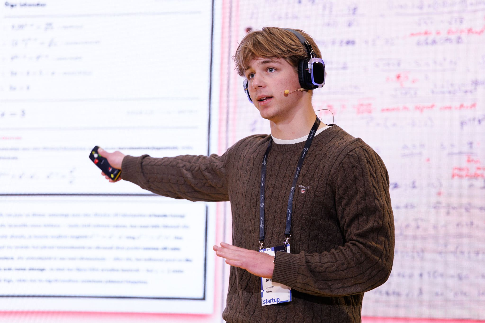

Eesti matemaatikaõpetajatele
Vähem punast tinti. Rohkem aega õpetamiseks.
PunanePastakas analüüsib üles laetud matemaatikatööd, määrab hindamisjuhendi põhjal punktid, märgib, kus viga tekkis ja annab õpilasele põhjaliku tagasiside.
Töö 12 / 24 · Ülesanne 5
Skannitud leht
Lahenda: 2(x + 3) = 14
2x + 6 = 14
2x = 20
x = 10
Hindamismudel
Lahenda: 2(x + 3) = 14
2x + 6 = 14 1p
2x = 8 1p
x = 4 1p
Viga leitud
Lahutamisviga: 14 − 6 = 8, mitte 20. Lahenduskäik on õige.
ettepanek: −1 p
1 / 3 punkti
Probleem
0 tundi aastas
Nii kaua parandab keskmine õpetaja töid — suur osa sellest tasustamata õhtutööna. Ja õpilaseni jõuab sageli vaid number, mitte põhjalik tagasiside.
Kuidas töötab
Neli sammu paberivirnast tagasisidestatud töödeni
Õpetaja juhib töövoogu algusest lõpuni. Masin teeb lihtsalt „musta töö" ära.
-
01
Õpetaja laeb üles töömalli ja õpilaste tööd
-
02
Tehisintellekt kõrvutab õpetaja korrektset töömalli õpilaste töödega, määrab punktid ja leiab vead
-
03
Õpetaja kinnitab masina hinnangu.
-
04
Õpilane saab emailile töö koos põhjaliku tagasisidega iga küsimuse kohta.
Andmekaitse
Isikuandmete kaitsmine on meile väga tähtis
GDPR-iga kooskõlas
Kasutame OpenAI servereid Euroopas, millel on kohalik data-residency.
Pildid kustutatakse kohe
Pildid salvestatakse ainult töötlemise ajaks.
Õpilaste nimed on varjatud
Eksamite puhul ei saadeta nimega tiitellehte hindamisele. Kontrolltööde puhul kasutavad õpilased nime asemel koodi.
Töid ei kasutata mudelite treenimiseks
Õpilaste tööd ei liigu edasi suurfirmade testimiskeskustesse.
GDPR-iga kooskõlas
Kasutame OpenAI servereid Euroopas, millel on kohalik data-residency.
Pildid kustutatakse kohe
Pildid salvestatakse ainult töötlemise ajaks.
Õpilaste nimed on varjatud
Eksamite puhul ei saadeta nimega tiitellehte hindamisele. Kontrolltööde puhul kasutavad õpilased nime asemel koodi.
Töid ei kasutata mudelite treenimiseks
Õpilaste tööd ei liigu edasi suurfirmade testimiskeskustesse.
MURG-i pilootprojekt
120 eksamit
(1000+ lehekülge matemaatikat)
- Veamäär
- ±1%
- Kiirus
- 2x kiirem
Meist
Meie tiim
Tiimis on nii õpetaja kui ka õpilase kogemust. Samuti on meil kogenud arendajad, mis tähendab, et me tunneme seda valu ja oskame seda ka leevendada.

Ekke Martin Henk
Andrius Matšenas
Hendrik Pärli
Elias Teikari
Kristofer Torokoff
Ralf Maapalu
Karl-Elmar Vikat
Oliver Iida
Saavutused
Viimase aja saavutused ja tunnustused
Liitu ootenimekirjaga
otsime pilootõpetajaid
üle Eesti!
Kasutame su e-posti ainult selleks, et piloodi asjus sinuga ühendust võtta. Me ei jaga su aadressi ja saad end igal ajal nimekirjast eemaldada.
Võta ühendust
Oleme avatud koostööle, palun helistage või kirjutage meile ning leiame ühise aja, et näost-näkku kohtuda või kõne teha!
Meil ei ole veel ametlikku meili, seega on siia lisatud Ekke isiklikud kontaktid. Loodan, et keegi pahaks ei pane :)
+372 5883 7278